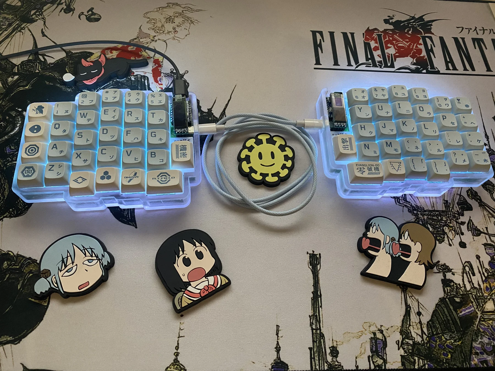
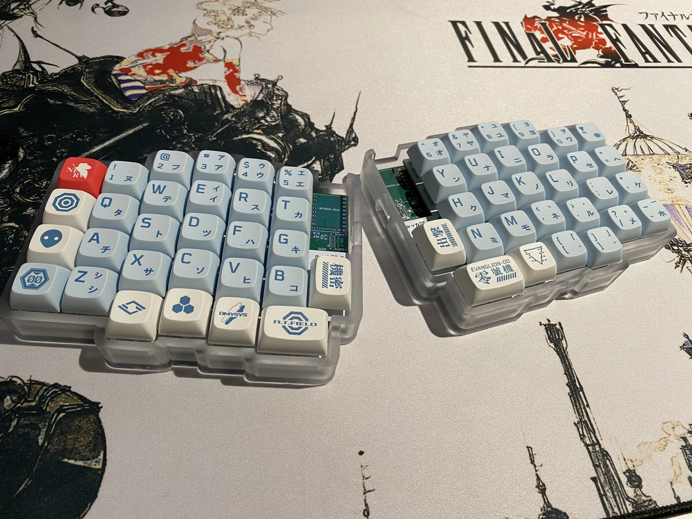
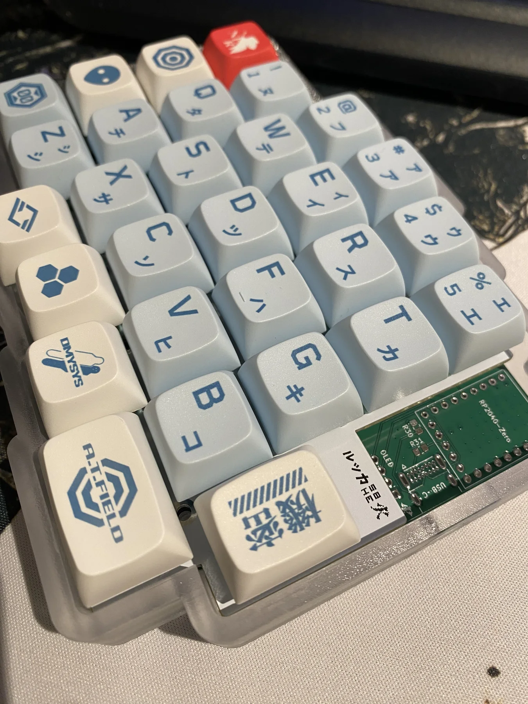
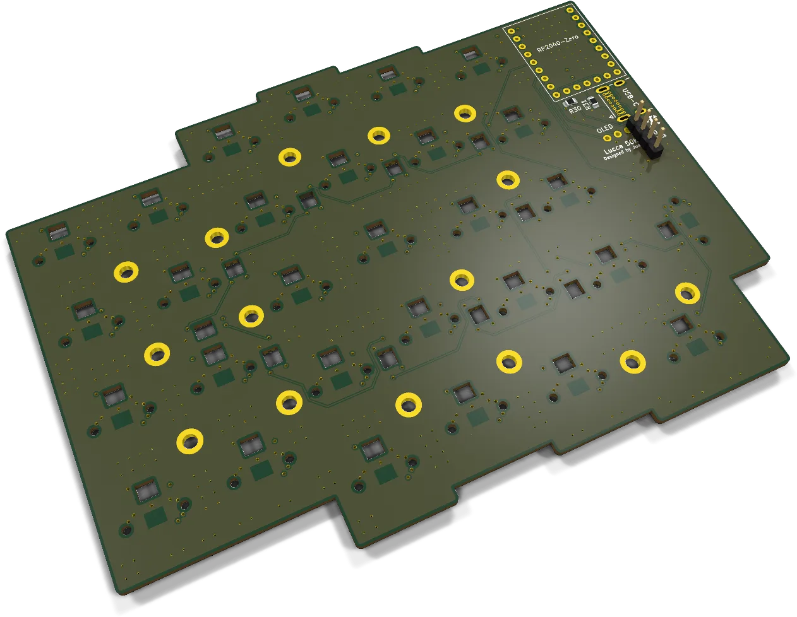
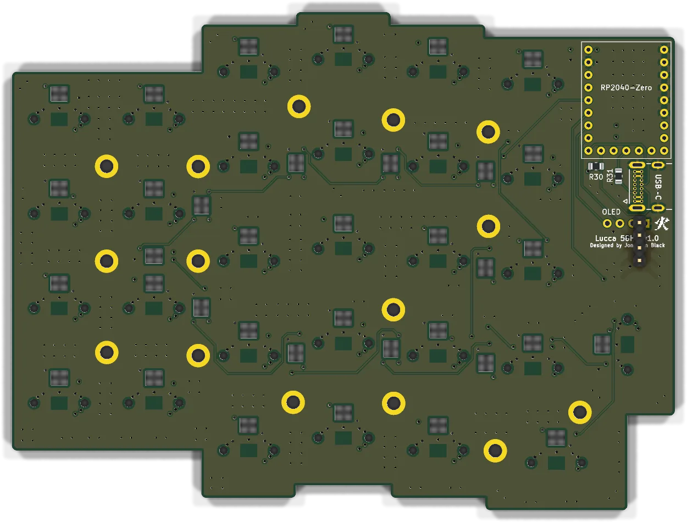
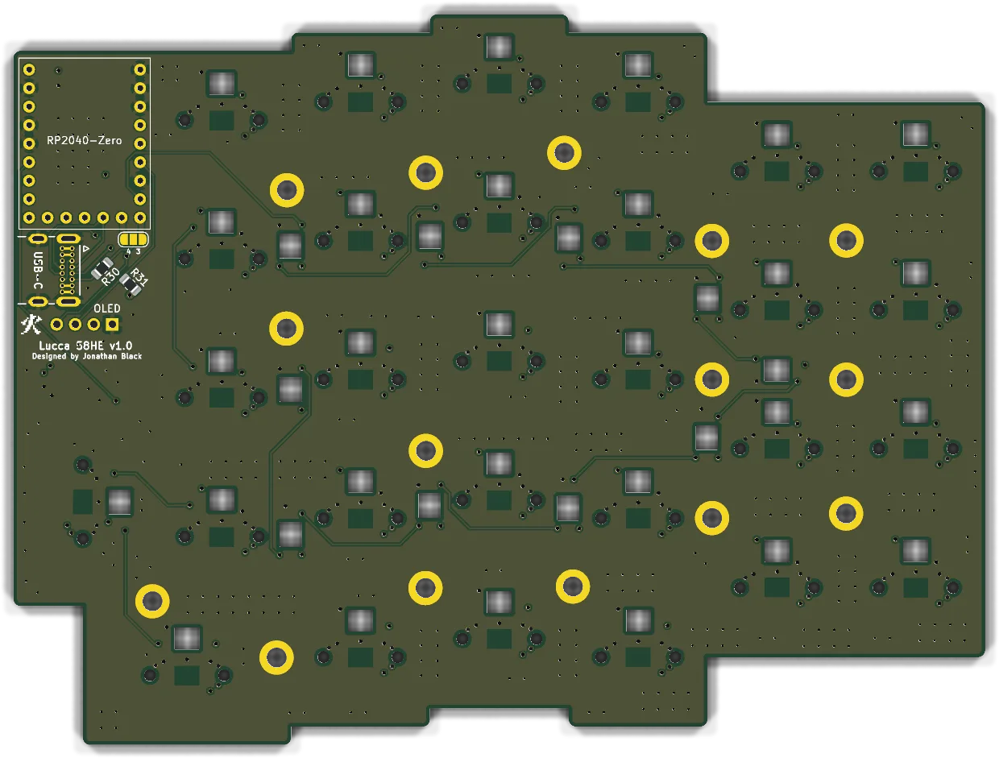

Chapter I
Lucca 58HE
Of a keyboard that feels the depth of every keystroke

A fifty-eight key split keyboard in which no key is a switch at all. Beneath each cap sits a magnet, and beneath the board a DRV5053 hall sensor, read through an ADG732 thirty-two channel multiplexer into the analogue inputs of an RP2040. The travel of a key is resolved to about seven micrometres, which makes rapid trigger and an actuation point anywhere from nought to three and a half millimetres a matter of firmware alone.
- Controller
- Waveshare RP2040-Zero, one per half
- Sensing
- DRV5053 hall sensors via ADG732 multiplexer
- Lighting
- SK6803 Mini-E per-key RGB, ten-point underglow
- Link
- USB-C; SPI or UART between the halves
- Sundries
- SSD1306 OLED, three-dimensionally printed case
Open hardware · source on GitHub




